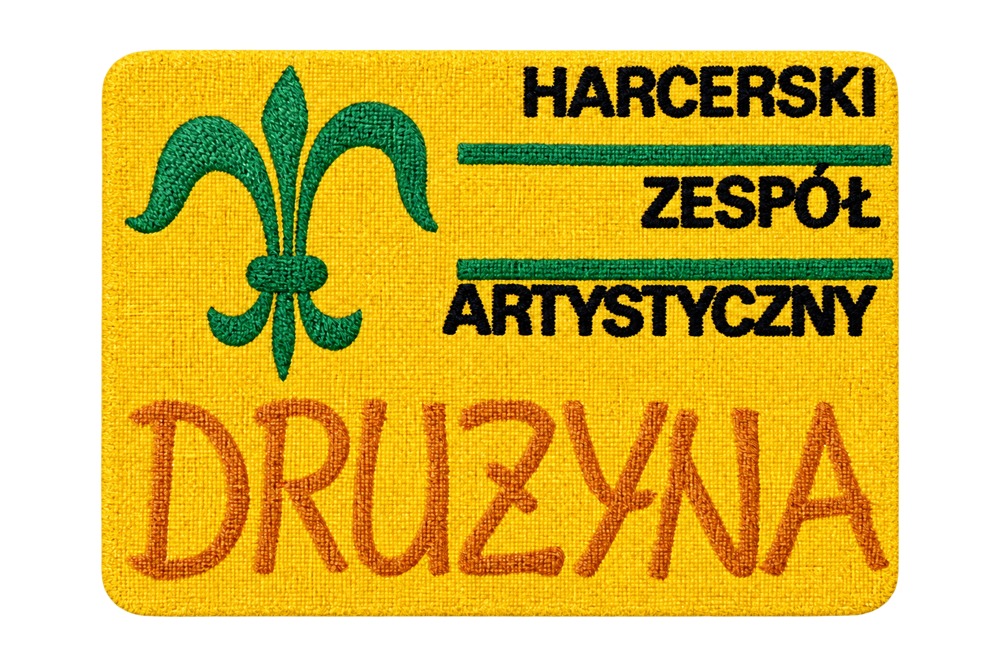

miejsce na fotografię
Początki „Drużyny”
Pierwsza próba, program „Razem z nami” i ludzie, którzy stworzyli zespół.
Harcerska „Drużyna” — ludzie, wspólne przeżycia i wartości, które przez lata łączyły śpiew, taniec i scenę.
Poznaj nas →
Tworzymy archiwum zespołu, w którym harcerstwo spotyka się ze sztuką. Zbieramy wspomnienia, fotografie, nagrania, nazwiska i miejsca związane z „Drużyną”.
Nasza historia →35 osób związanych z „Drużyną” spotkało się ponownie. To miejsce na kolejne spotkania, wyjazdy i wspomnienia dawnych członków.
Pierwsza próba, program „Razem z nami” i ludzie, którzy stworzyli zespół.
Miejsce na nagrania radiowe, koncertowe i wspomnienia muzyczne.
Sielpia, Harz, Halle, Łagów i inne miejsca zapisane w historii zespołu.
Nazwiska instruktorów, choreografów i twórców znajdą swoje pełne miejsce w osobnej podstronie — z sylwetkami, datami i źródłami.